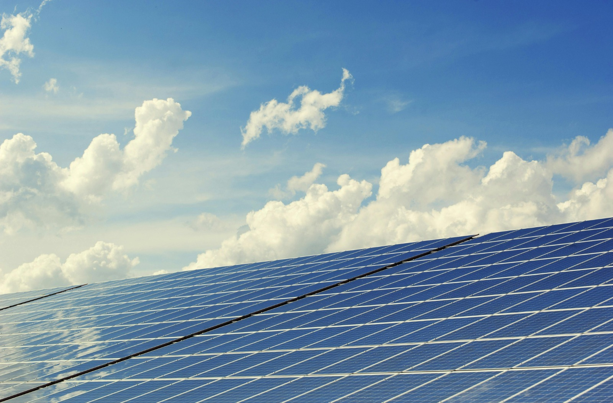

Economia verde é um modelo econômico que visa a melhoria de indicadores sociais, da eficiência no uso de recursos naturais e a adesão de práticas de consumo consciente e baixa emissão de carbono. O nosso objetivo é promover o crescimento econômico ao mesmo tempo em que se combate a desigualdade social, os riscos ao meio ambiente e também a escassez ecológica.
A economia verde funciona ao integrar o crescimento económico, a inclusão social e a sustentabilidade ambiental, promovendo um modelo de produção e consumo responsável que preserva os recursos naturais para as gerações presentes e futuras. Isso é feito através da adoção de energias renováveis, da gestão eficiente dos recursos e resíduos, do investimento em tecnologias limpas, da preservação de ecossistemas e da implementação de políticas públicas e práticas de negócios sustentáveis (ESG), como a economia circular e a agricultura de baixo carbono.
As placas de energia solar são um ótimo exemplo de Economia verde, na verdade, qualquer tipo de energia renovável pode ser considerada uma vertente da Economia verde se contarmos com os seus princípios de desenvolvimento sustentável, eficiência energética, busca por inclusão econmica e o consumo consciente.
O conceito de Economia verde foi desenvolvido pelo Programa das Nações Unidas para o Meio ambiente (Pnuma) no ano de 2008 e refere-se ao conjunto de ações que visam à promoção de uma economia com crescimento pleno, que se baseie no bem-estar social e que esteja centrada em reduzir os riscos ambientais e conservar o meio natural. Portanto, a Economia verde busca conciliar a noção de produção de baixo carbono, o uso eficiente e sustentável dos recursos naturais e a inclusão social.
De acordo com o Pnuma, a Economia verde precisa estar centrada em estimular a geração de empregos e a produção de renda para toda a população, ao mesmo tempo em que devem ser tomadas medidas para a redução dos gases-estufa, a ampliação da eficiência energética (com o uso de fontes de energia alternativas e limpas) e o uso sustentável dos recursos naturais.
Não! a Economia verde não é o mesmo que desenvolvimento sustentável. A economia verde é um modelo económico específico focado na promoção do crescimento através de práticas de baixo impacto ambiental e que consideram a escassez de recursos, enquanto o desenvolvimento sustentável é um conceito mais amplo que abrange as dimensões ambiental, social e económica para garantir que as necessidades do presente não danifiquem as gerações futuras.
 GeoMania
GeoMania